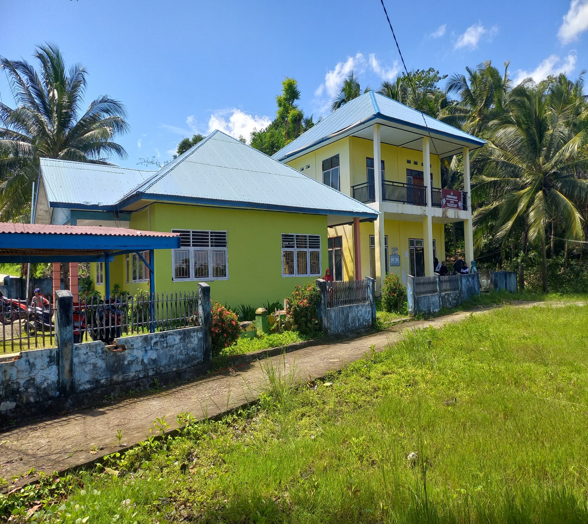
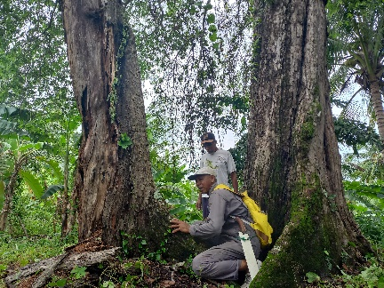
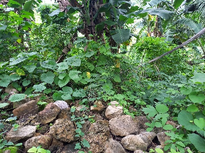

Profil Desa
Sejarah & Pemerintahan Desa
Pemekaran dari Desa Balasuna pada 2007, definitif sejak 2008 dengan tiga dusun — dilengkapi struktur pemerintahan, lembaga desa dan tokoh masyarakat.
Pemekaran dari Desa Balasuna pada 2007, definitif sejak 2008 dengan tiga dusun — dilengkapi struktur pemerintahan, lembaga desa dan tokoh masyarakat.
Asal-usul masyarakat Desa Balasuna Selatan sebagaimana masyarakat Kaledupa dan Kabupaten Wakatobi pada umumnya berasal dari Suku Buton.
Informasi tentang kapan mereka mendiami wilayah Desa Balasuna Selatan ialah pada saat sebagian masyarakat (nelayan) yang tinggal di perbukitan membuat sebuah rumah singgah (Fale) di Toroho untuk memudahkan aktivitas melaut mereka.
Pada awalnya masyarakat hidup berkelompok membentuk beberapa wilayah pemukiman yang disebut libu — Tombuluruha, Tapaa dan Wa Beka. Abad XVI Kaledupa menjadi bagian Kesultanan Buton sebagai wilayah otonom (Barata Kahedupa) yang dipimpin seorang Miantu'u. Wilayah Kahedupa dibagi menjadi sembilan limbo (Sio Limbona), masing-masing dipimpin seorang Bonto. Libu-libu tersebut menjadi salah satu limbo bernama Limbo Tombuluruha.
Tahun 1950-an Limbo Tombuluruha menjadi Desa Buranga (Kampung Tombuluruha, Tapaa, Kiwolu). Tahun 1976 Desa Buranga memekarkan dua desa: Desa Ollo dan Desa Balasuna. Wilayah Dusun Mokora dan Toroho meliputi keseluruhan Desa Balasuna Selatan saat ini.
Tahun 2007 Desa Balasuna Selatan memekarkan diri dari Desa Balasuna dan mulai definitif pada 2008 dengan tiga dusun: Toroho, Kakado dan Mokora.
Kemarau 1972 memaksa masyarakat mengonsumsi sagu pohon enau dan buah bakau; wabah 2020 menghentikan alur pelayaran sehingga pasokan pangan dari luar terhenti.

Balasuna Selatan, Kaledupa
Kaledupa menjadi wilayah otonom Barata Kahedupa; wilayah dibagi 9 limbo, Limbo Tombuluruha menjadi salah satunya.
Kaledupa menjadi Distrik Wanci-Kaledupa (Wandupa).
Terdiri dari Kampung Tombuluruha, Tapaa dan Kiwolu.
Desa Buranga memekarkan Desa Ollo dan Desa Balasuna.
Wilayah Mokora dan Toroho melebur menjadi Desa Balasuna Selatan.
Dusun Toroho, Dusun Kakado dan Dusun Mokora.
Bagian dari Masyarakat Adat Barata Kahedupa; bahasa sehari-hari Bahasa Kahedupa.
Seluruh masyarakat beragama Islam: tradisi khitanan (kanalako), Maulid 5 Rabiul Awal, tahlilan hari ke-3/7/40/100, ziarah makam 1 Syawal & 10 Dzulhijjah.


Secara administrasi Desa Balasuna Selatan dibagi dalam tiga dusun dengan struktur pemerintahan yang diisi 14 perangkat desa.
Kepala Desa dan unsur kesekretariatan (Kaur, Kasi, Kadus) dipimpin Sekretaris Desa serta 3 orang staf desa. Perempuan mendominasi dengan 11 orang, laki-laki 3 orang.
Perempuan: Sekretaris Desa, KAUR TU & Umum, KAUR Keuangan, Kasi Kesejahteraan, Kasi Pemerintahan, Kadus Kakado, Kadus Toroho, Staf Kaur, Staf Kasi, Staf Kadus. Laki-laki: Kepala Desa, KAUR Perencanaan, Kasi Pelayanan, Kadus Mokora.
Melalui program Desa Sigap, pemerintah desa dan BPD dilatih menyusun dua rancangan perdes: Tata Ruang Pemanfaatan Wilayah dan Perlindungan Mata Air & Sempadan Kali.
Balasuna Selatan · Kecamatan Kaledupa · Kabupaten Wakatobi
Unsur Kesekretariatan
Staf & Kepala Dusun
BPD Balasuna Selatan beranggotakan 5 orang perwakilan tiap dusun — 4 laki-laki dan 1 perempuan. Laki-laki menjabat Ketua, Wakil Ketua, Sekretaris dan Ketua Bidang Pembinaan & Pemberdayaan; perempuan menjabat Ketua Bidang Pemerintahan dan Pembangunan.
Desa umumnya aman; gangguan masih tergolong ringan dan kerap dipicu minuman keras. Jalur desa tergolong rawan kecelakaan karena jalan rusak serta lurus dan berbelok-belok.